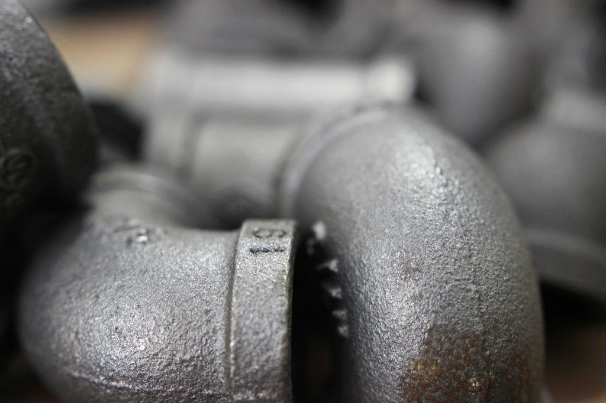
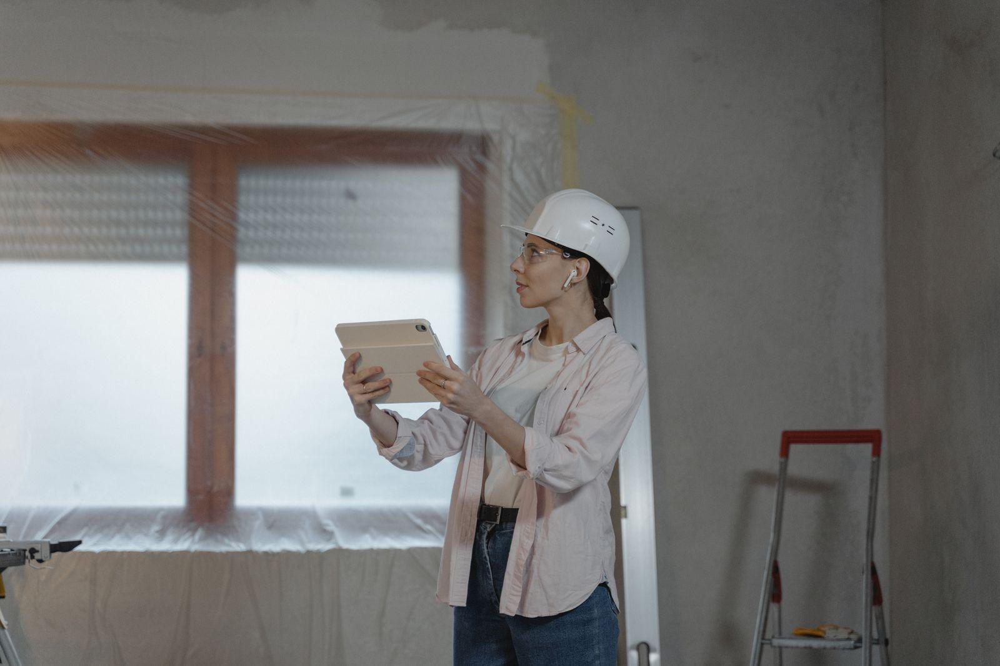
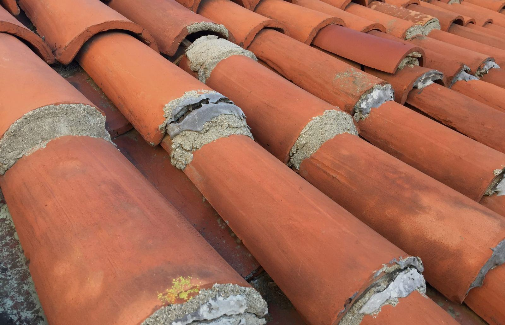

Vad ska föreningen ta tag i?
Styrelserna om oss

”Vi var oroliga för de äldre medlemmarna. Boendevärden Samir hade koll på vem som behövde hjälp att flytta undan i badrummet och vem som ville ha en extra genomgång.”
Gunilla P.Brf Lännersta Backe 
”Tre anbud låg inom fem procent, men bara Skurusund kunde visa hur de skulle hålla trapphusen öppna under balkongbytet.”
Martin H.Brf Ekuddens Terrass 
”Slutbesiktningen hade fyra anmärkningar på 84 lägenheter. Alla var åtgärdade inom en vecka.”
Anders L.Boo
Illustrationsbilder
Från förstudie till garanti
 Steg 1 / 4
Steg 1 / 4Styrelsemöte och förstudie
Vi besiktar huset, filmar stammarna och presenterar tre alternativ med kostnad per lägenhet.
NästaInformationsmöte Steg 2 / 4
Steg 2 / 4Informationsmöte
På stämman svarar projektledaren på medlemmarnas frågor innan beslut tas.
NästaProduktion trapphus för trapphus
Steg 3 / 4Produktion trapphus för trapphus
Boendevärden lämnar tidplan i varje brevlåda och finns på plats varje vardag 7–16.
NästaBesiktning och fem års garanti Steg 4 / 4
Steg 4 / 4Besiktning och fem års garanti
Oberoende besiktning, och sedan fem års garanti med en namngiven servicekontakt.
Kontakta oss
Senaste från Skurusund

Pågående och färdiga projekt


Kan vi bo kvar under stambytet?
Ja, det gör nästan alla. Under de åtta veckorna finns duschvagnar på gården och en fungerande toalett i lägenheten varje kväll.
Hur mycket kostar ett stambyte?
För hus från 1950–70-talet hamnar de flesta föreningar på 550 000–750 000 kronor per lägenhet inklusive nytt badrum, beroende på standard och el.
Måste föreningen anlita en konsult först?
Nej. Vi kan göra förstudien och ta fram förfrågningsunderlaget, men många föreningar har en egen byggledare och det fungerar lika bra.
Vilka tillval kan medlemmarna göra?
Golvvärme, inbyggd tvättmaskin, extra eluttag och kakel från vår visningslokal. Tillvalen faktureras direkt till medlemmen.
Vilken garanti lämnar ni?
Fem år enligt ABT 06 och tio år på tätskikt i våtrum som är utförda enligt Säker Vatten.
Hur långt i förväg behöver vi boka?
Räkna med 9–12 månader från första möte till byggstart för stambyten, eftersom stämman ska fatta beslut och medlemmarna välja material.

Står föreningen inför stambyte eller fasad? Boka en kostnadsfri förstudie med styrelsen.
Kontakta oss


En stambytesentreprenad lyckas eller misslyckas i trapphuset. Rören är det lätta – det svåra är att 168 hushåll ska kunna leva sitt liv under tiden.
- Organisation
Fyra avdelningar, en projektledare
Varje bolag drivs lokalt av sina medarbetare, med koncernens styrka i ryggen.
 01 · Stambyten och badrum
01 · Stambyten och badrumSkurusund Stam
Åtta veckor per trapphusRörmokare, plattsättare och snickare i fasta lag som byter stammar i cirka 600 lägenheter per år.Läs mer
02 · Fasad, balkong och takSkurusund Fasad
Klimatskalet i ett svepMurare, plåtslagare och takläggare som renoverar puts, tegel och plåt på hus från 1890 till 1970.Läs mer 03 · Vindsinredning
03 · VindsinredningSkurusund Vind
Nya bostäder ovanpå de gamlaProjekterar och bygger vindslägenheter, från bygglov till slutbesked och tillträde.Läs mer 04 · Garanti och underhåll
04 · Garanti och underhållSkurusund Service
En kontakt efter flyttenFyra servicetekniker med bilar i Nacka och på Södermalm som rycker ut på ramavtal.Läs mer